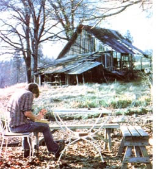

PHOTOS BY THE AUTHOR
There are literally hun dreds of picture subjects around your house or homestead that could inspire fine sketches for your personalized holiday greeting cards. Here, the artist depicts a rustic old barn on the author's property.